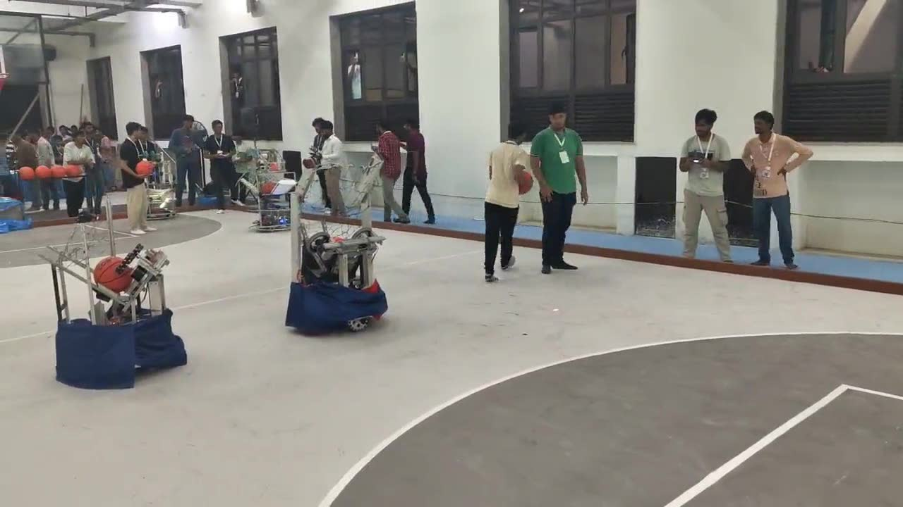
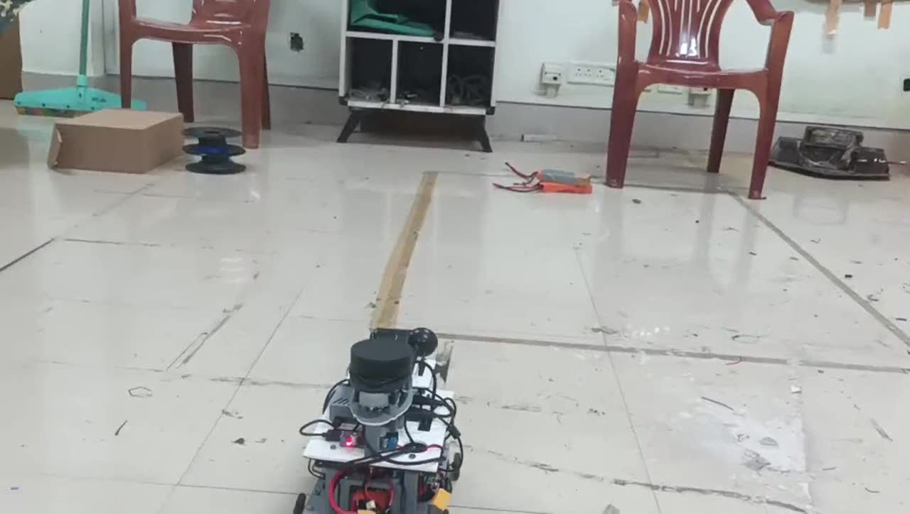
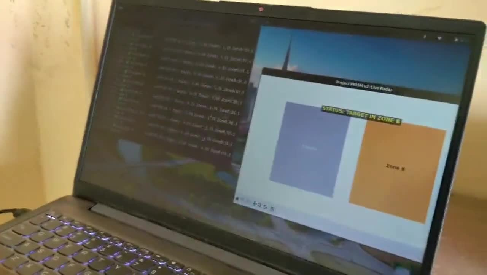
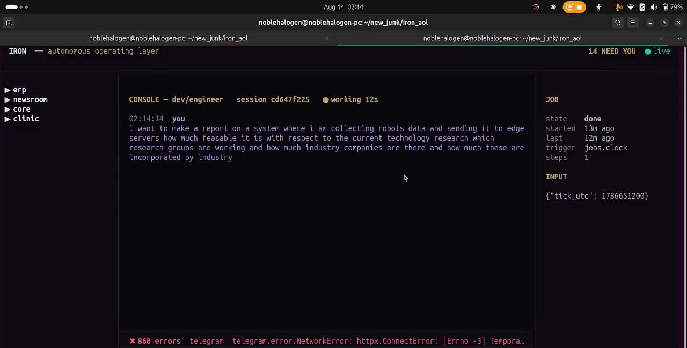
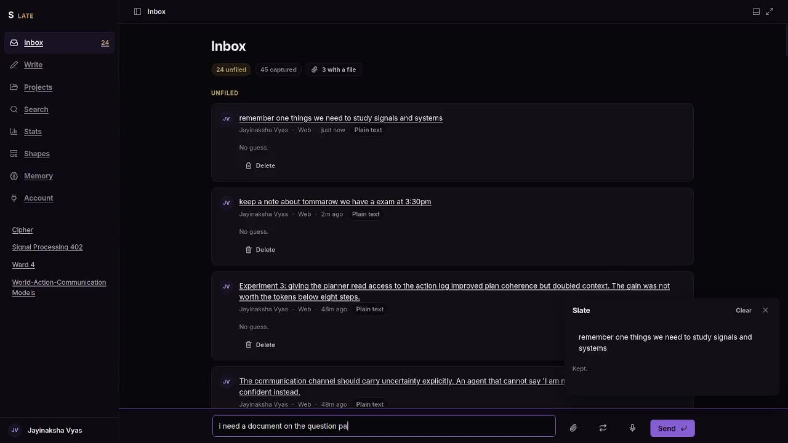
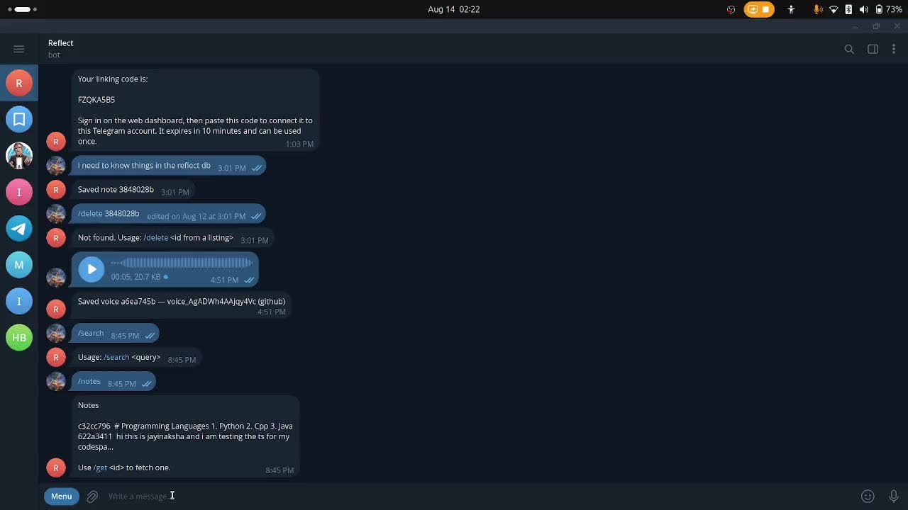
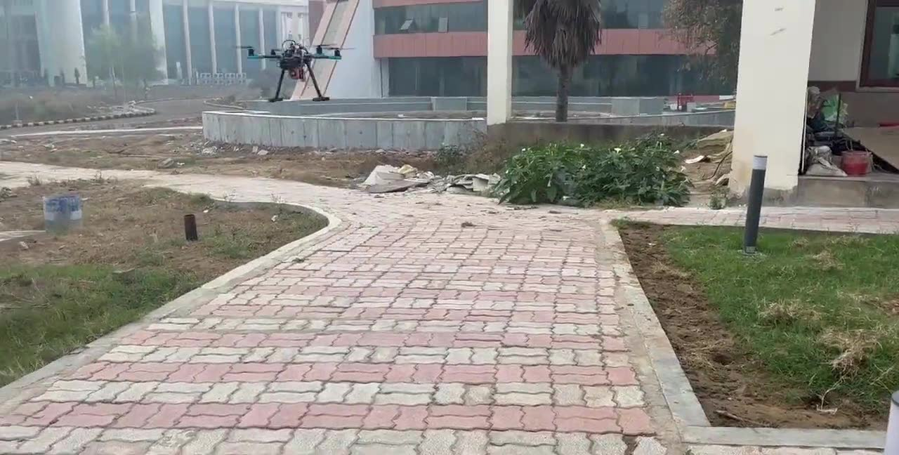

The reel
Thirty-eight seconds across every project, cut from the real test and match footage.
Project sites
Hover a tile to play its footage.

/Robocon-25_codesTeam Phoenix
Two basketball robots — one teleoperated, one autonomous — forty engineers, one fixed deadline.
ROS 2 · ESP32 · RealSense
/agentic-botR2-D2 Redux
Say “go to the table.” A VLM, a semantic map and a 20B planner turn it into a Nav2 goal.

/zerotouchZeroTouch
Which zone of a room you are in, from the Wi-Fi signal of a $4 ESP32.

/iron-overviewIron
Agents declared as markdown folders, run as supervised ROS 2 processes, recorded on a log nobody can edit.

/slateSlate
Send it anything. Ask for the document later — in your format, every block cited.
Newsroom
No editor — only a published ladder that decides what counts as verified, and posts its own corrections.

/telenotestelenotes
Telegram in, markdown in your own git repo out. Bot, dashboard and terminal client.

/portfolio/projects/…Motor-failure recovery
A quadcopter loses a rotor mid-flight, holds attitude on three, and lands.